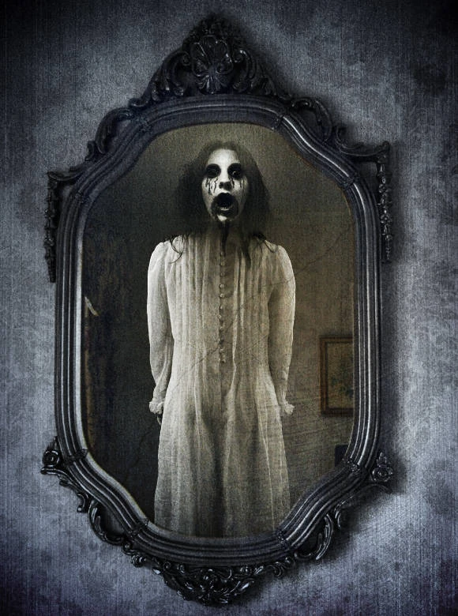

Estados Unidos - Espelhos
BLOODY MARY
Aparece no espelho quando é chamada três vezes.
Curiosidades
Lenda urbana moderna: É um dos rituais de invocação mais famosos do mundo ocidental, tradicionalmente testado em banheiros escuros e diante de espelhos em festas de pijama.
Variedades da aparição: Dependendo da região ou da versão contada, quem invoca a entidade pode vê-la arranhando o próprio rosto, fazendo o espelho sangrar, ou pode ser puxado para dentro dele.
Raízes históricas: Alguns historiadores associam o nome da lenda à rainha Maria I da Inglaterra (conhecida como Bloody Mary por causa de suas violentas perseguições religiosas).